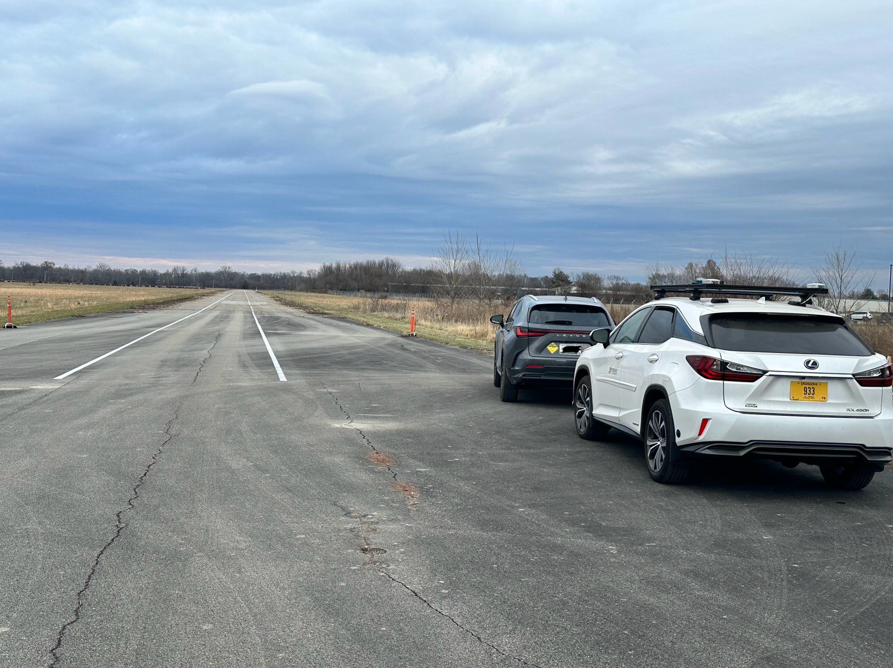
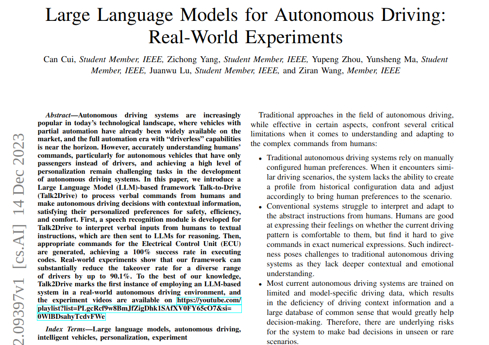
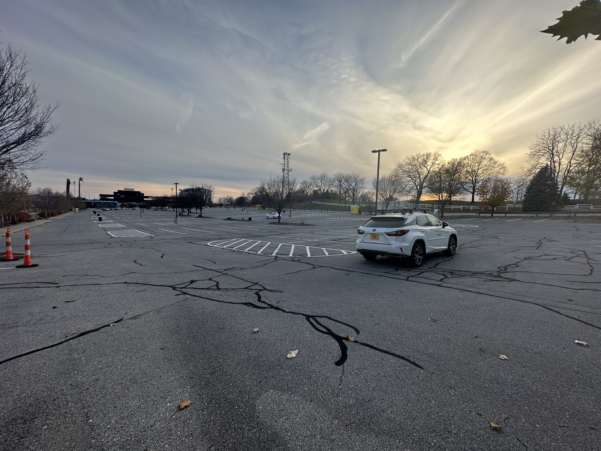
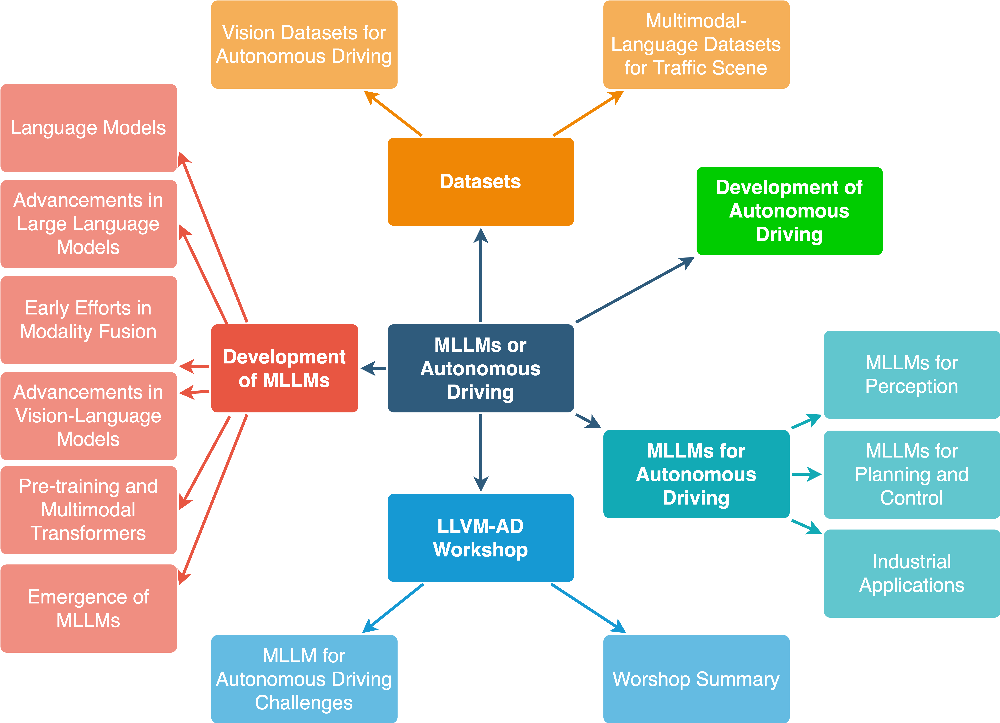
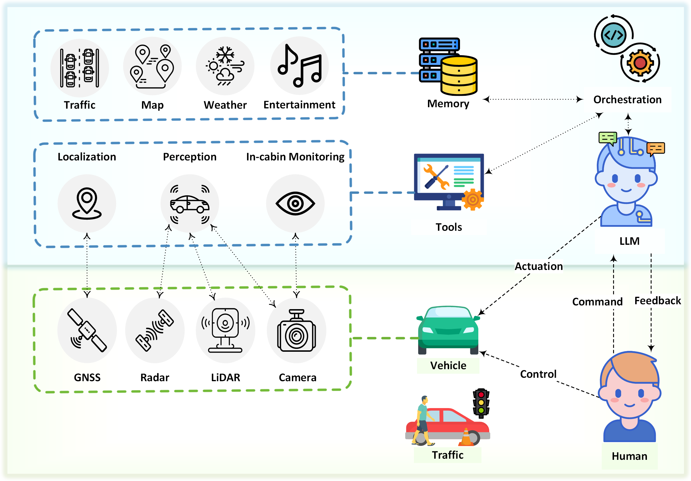
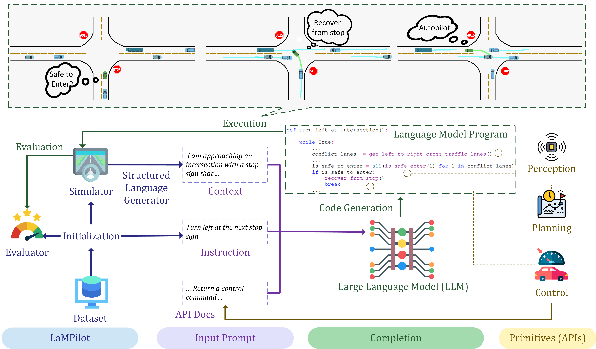

Our work focuses on pioneering research at the intersection of LLMs, VLMs and autonomous driving.
We're investigating how advanced language understanding can improve vehicle decision-making and
human-vehicle interaction, thereby enhancing safety and efficiency in autonomous systems. Our goal
is to push the boundaries of AI in automotive technology and lead the way in developing smarter,
safer, and more intuitive autonomous vehicles for the future.

We successfully used our Talk2Drive framework in the highway scenario, and new demos were
available now!

We successfully used our Talk2Drive framework in the intersection scenario, and new demos were
available now!

Our new paper "Large Language Models for Autonomous Driving: Real-World Experiments" about
Talk2Drive was available now!

We successfully tested our Talk2Drive framework on a real vehicle in a closed parking lot.

Our new paper
"A Survey on Multimodal Large Language Models for Autonomous Driving" was accepted by WACV 2024!

Our new paper
"Drive as You Speak: Enabling Human-Like Interaction with Large Language Models in Autonomous
Driving" was accepted by WACV 2024!

Our new benchmark paper
"LaMPilot: An Open Benchmark Dataset for Autonomous Driving with Language Model Programs" was
avaliable now!

Our new paper
"Receive, Reason, and React: Drive as You Say with Large Language Models in Autonomous Vehicles"
was avaliable now!